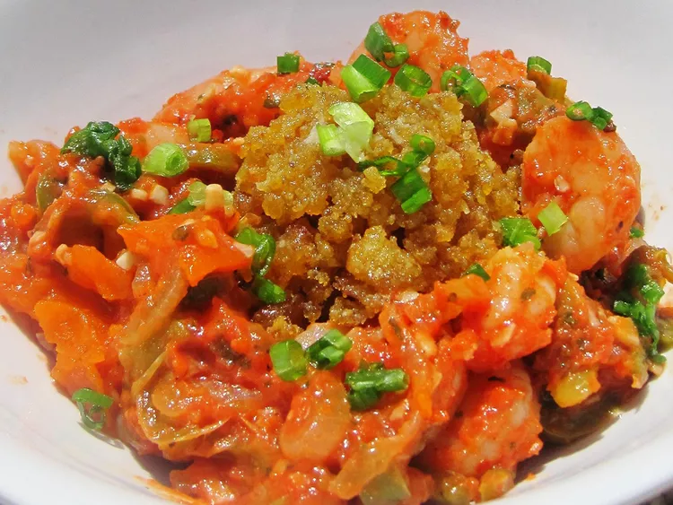

Mofongo

Description
Mofongo: Puerto Rican dish of mashed crispy green plantains with garlic, olive oil, and pork rinds or bacon.
Versatile - pairs with chicken or stuffed with shrimp, pork, or octopus salad. Serve as large balls or drop into hot broth. A delicious guilty pleasure!
Ingredients
- 3 cups canola oil for frying
- 3 cloves garlic, or to taste
- 3 tablespoons olive oil
- ⅛ cup crushed fried pork skins
- 2 green plantains, peeled and sliced into 1/2-inch rounds
- salt to taste
Steps
- Heat canola oil in a deep-fryer or large saucepan to 350 degrees F (175 degrees C).
Mash garlic with olive oil in a mortar and pestle. Combine garlic mixture with pork rinds in a large bowl; set aside.
- Fry plantain chunks until golden and crispy, but not brown, about 15 minutes.
Transfer fried plantains into the bowl with garlic mixture; toss to coat and mash with the pestle until smooth. Season with salt.
- Roll plantain mixture into two large balls or several small balls before serving.
Go to homepage